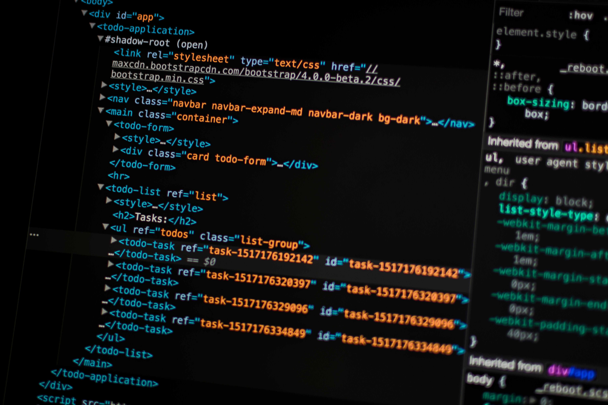
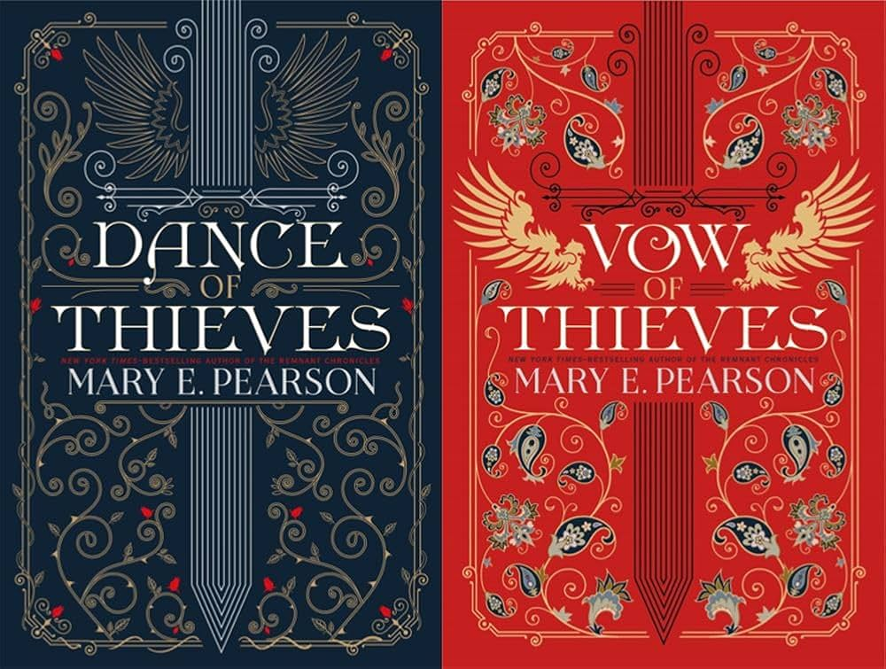

Learning Web Development
October 5, 2026 by Olivia Petrekin

Before this course, I had only used HTML a few times to make a simple webpage
for class or assignments. I had heard of CSS and it was used in a project I did but
I was not really involved in that portion of the code so I never fully understood all
that was happening. This course introduced JavaScript to me. Thus far in the course we
have covered HTML and CSS and are now going through JavaScript.
I am not comfortable with using HTML and CSS as yet, so I have to continue practicing
so I can be more familiar with the different elements. My goal at the end of this course,
is to become somewhat familiar with the different languages and tools that I am exposed to.
Reading
October 7, 2026 by Olivia Petrekin

When I was younger, I used to hate reading. I found it boring
and I could not understand how people did it regularly.
As I got older though, I've developed a slight interest in reading.
I say slight because sometimes I still find it difficult to take the time to read,
even if it is a book I want to read.
My least favourite materials to read are academic ones. Yes I know
it is important for school and I do, begrudgingly, when I need
to. On the other hand, my favourite genre is romance.
My favorite book is 'Dance of Thieves' written by Mary E. Peason
and it is a fantasy romance novel. There is a second installment called 'Vow of Thieves'
that I have yet to read as yet but I am very excited to read it.
I also prefer physical books rather than e-books.